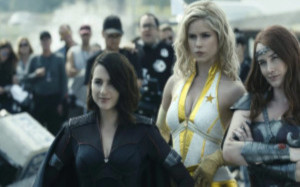

A HISTÓRIA
The Boys é uma série da Amazon Prime Video produzida por Eric Kripke, adaptando as histórias em quadrinhos de Garth Ennis. Na trama, temos um mundo que imagina a existência de super-heróis por um viés irônico que beira uma paródia sombria. Tratando os heróis como celebridades ególatras, conhecemos um grupo de seres humanos normais, liderados por Billy Butcher, que confronta os “supers”, cada membro carregando um trauma emocional causado pelos “heróis”.
A série da Amazon conta com três temporadas e uma quarta em produção, sendo bastante elogiada pela crítica e considerada um sucesso de audiência.
Repercussão
Considerado um dos maiores sucessos originais do Amazon Prime Video, The Boys conquistou o público e a imprensa especializada. Prova disso é o desempenho positivo da produção americana nos principais agregadores, como o IMDb, onde a série tem nota 8,7, com base em 587 mil considerações. Já no Rotten Tomatoes, a adaptação conquistou 93% de aprovação da crítica.
Em reviews internacionais, como a do NME, o jornalista James McMahon não poupa elogios quanto à narrativa de The Boys, descrevendo-a como uma "acusação contundente sobre como o poder corrompe". David Griffin, do IGN, também segue nesta análise positiva, ressaltando que a produção do Amazon Prime Video "é irreverente, divertidamente gratuita e um passeio incrível, com cenários excessivamente violentos e histórias convincentes".